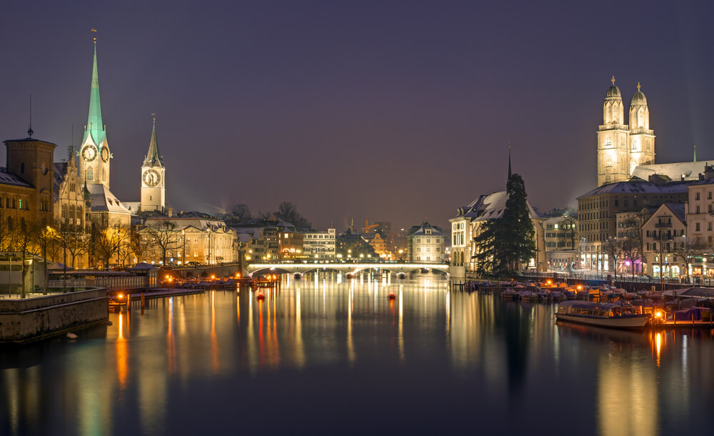
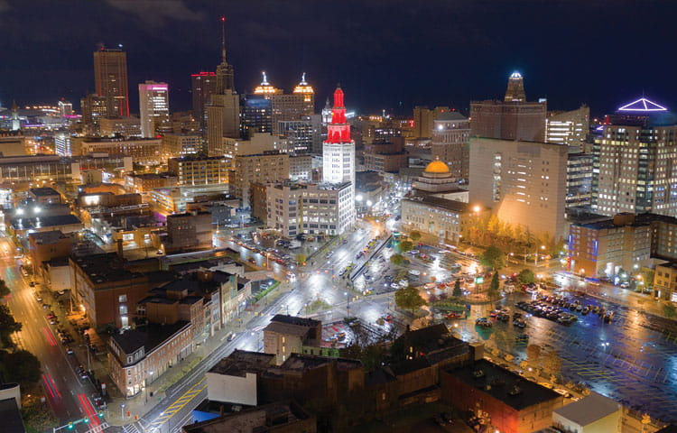
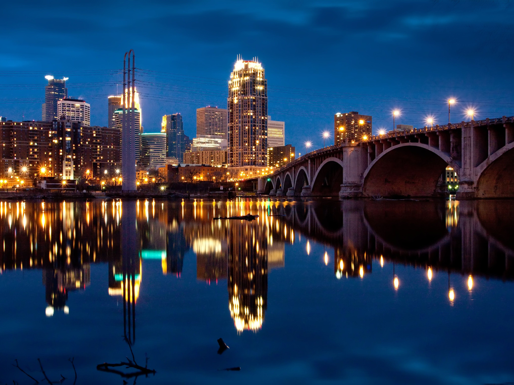
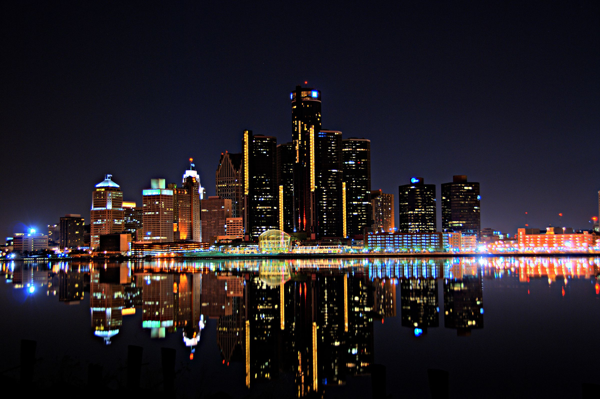

Seeing a new city brings a new kind of experience. Depending on the country, the people there may even speak a different language or have different types of food. Professional tourists claim that this is something they seek out when exploring new cities. If you want your taste buds to also take an adventure, I recommend traveling to a city of another culture. It is also a great opportunity to learn the history of another culture as well.
Touring cities allow you to expand your perspective on life and the world as a whole. You get to see people of different backgrounds and cultures and realize that there are many different people with different experiences. It’s a great way to gain insight as to how the world works and functions outside your home/community. Most of the time you don’t hear everything that happens around the world on the news, so seeing a new city may shed light on the gaps of information forgot about on the news channel.
Cities allow you to be yourself and really live freely. Different cities and countries have different personalities and types of people, giving you a wide range of personalities to find yourself in. Maybe you aren’t sure where your life is headed or the direction you wanna take to get to your goal, whether that be expressing yourself, finding happiness, or being financially successful/wealthy. You’ll see, hear, and experience things that will make you a more well-rounded person altogether. It's exciting to finally be happy knowing your once alienated ideas are shared throughout the people and environment around you.
Buffalo, New York
Taking a look at Buffalo, it offers new friends, many taverns, and rowdy tailgates. Supposedly there are more taverns than Starbucks. In Elmwood Village, Delaware Park, and North Buffalo, everything is walkable and relatively close together. Buffalo is seen as a design hub; there are many art decoration architectures that really made Buffalo stand out as a "design hub". There are many restaurants/bars along Elmwood Avenue, the best modern art museums in history, and beautiful gardens. This wild city offers quite a rowdy yet enjoyable experience (friends are recommended).
Minneapolis, Minnesota
Minneapolis is a great option for travel. With many restaurants and bars (much like Buffalo), Downtown Minneapolis is quite the experience. Uptown and Downtown Minneapolis are easily the more popular sides of town, but you can’t pass up Eat Street in Whittier. Here you can grab a banh mi (pork, hoisin sauce, daikon radish, fish sauce, rice) or bowl of noodles at Jasmine Deli. There is also the Minneapolis Institute of Art, pinball at Tilt Pinball Bar, and many breweries if you’re interested. Stop by Spyhouse for some coffee and head over to Cheapo (record shop). There are many exciting aspects of the different seasons in Minneapolis. For example, you can play shinny hockey in the winter and go kayaking in the summer (Minneapolis has many lakes).
Detroit, Michigan
Michigan has a sense of undying excitement and contentment. There’s plenty to do here during your stay, but you’ll need a car to travel between each of the walkable neighborhoods. There is much food and cocktail to enjoy, as well as award-winning cuisine. Head over to Cass Corridor’s Detroit Shipping Company to enjoy Pad Thai rolls from Bangkok 96 Street Food while kicking back and listening to jazz. You can also rent electric scooters in Downtown, Midtown, and Corktown. From there you can check out the Eastern Market on a Saturday for large crowds gathering for local farm and food vendors. There are many food trucks and even local sporting events at Comerica Park, Ford Field, and Little Caesars Arena.
